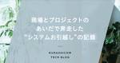
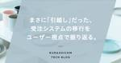

Kurashicom Tech Blog
https://note.com/kurashicom_tech
「北欧、暮らしの道具店」を運営しているクラシコムのエンジニア（ときどきデザイナー）による、技術者向けのブログです。普段の開発内容や、開発するなかでの気づきなどを発信しています。
フィード

現場とプロジェクトのあいだで奔走した“システムお引越し”の記録
Kurashicom Tech Blog
初めての内部統制に始まり、業務の切替準備、そして社内説明会まで。気づけば あちこちで“下見係”をしていました ——これは、新しいシステムという“おうち”に引っ越した 約半年間のシステムリプレースプロジェクトの記録です。続きをみる
16時間前

まさに「引越し」だった、受注システムの移行をユーザー視点で振り返る。 1
1
Kurashicom Tech Blog
こんにちは。カスタマーリレーショングループの中川です。カスタマーリレーショングループ(以下、CRグループ）は、主に注文の管理や返品・交換などのカスタマーサポート業務を担当しています。続きをみる
3日前
システムが事業成長をリードする未来に向けて──創業から育てた自社製基盤リプレイスの挑戦 2
Kurashicom Tech Blog
クラシコムでは、2024年、創業から長く積み重ねてきた自社製のシステムを再設計・再構築する「KCA（KurashiCom Admin）プロジェクト」がスタートしました。本インタビューでは、KCAプロジェクトの中でも最初に取り組んだ「受注管理機能」のリプレイスが完了したことを機に、プロジェクトの背景や進め方を振り返り、今後の展望について語ります。続きをみる
7日前
6/27（金）「北欧、暮らしの道具店 コンテンツ管理システムの移行プロセス」登壇 in Women Developers Summit 2025 （デブサミウーマン2025）
Kurashicom Tech Blog
2025年6月27日（金）に開催されるWomen Developers Summit 2025（通称 デブサミウーマン2025）に当社エンジニア 矢田が登壇いたします。「北欧、暮らしの道具店」では、月に70本ほどのコンテンツ記事（インタビュー、レシピ、コラム等）を更新しています。この裏側のシステムを先日WordPressから「Storyblok（ストーリーブロック）」というCMSのSaaSに移行いたしました。続きをみる
8日前

共にシステム開発するソニックガーデンHPにて、クラシコムの事例を振り返るインタビュー記事が紹介されました。
Kurashicom Tech Blog
クラシコムの基幹システムのリプレイスプロジェクトにつきまして、共に取り組んでいるソニックガーデンの事例インタビューにて紹介されました。ぜひご覧ください🌿続きをみる
20日前
「北欧、暮らしの道具店」スマホアプリ成長を支えるマーケチームの取材記事が公開されました。
Kurashicom Tech Blog
アプリマーケティング研究所に、「北欧、暮らしの道具店」スマホアプリの成長を支えるクラシコムのプロダクトマーケチームが取材いただきました。日々のデータ分析から、効率的な広告運用、さらにUXリサーチを含むアプリ改善まで一貫して行うチームの気付きをさまざま共有させていただきました。続きをみる
2ヶ月前
テクノロジーグループを支える主要サービスと開発スタイルの紹介（2025年版）
Kurashicom Tech Blog
こんにちは、エンジニアの木村です。保育園に通っている息子が4月から年長さんになるということで「ランドセルどうしよう…」がつねに頭の片隅に居座っている今日この頃です。続きをみる
2ヶ月前
「北欧、暮らしの道具店」アプリ 小さな声を集め、こつこつ改善した話
Kurashicom Tech Blog
こんにちは。デザイナーの白木です。今年11月、「北欧、暮らしの道具店」のアプリが、400万ダウンロードを突破しました！この成長の背景には、マーケティングの強化などの取り組みがあります。詳細はプレスリリースをご覧ください。今回は、「アプリの改善」に焦点を当ててお話しします。課題を知る続きをみる
5ヶ月前
わたしの星のままで一番星になる 〜Women Developers Summit 2024に登壇しました〜
Kurashicom Tech Blog
こんにちは、エンジニアの木村です。2024/11/20に開催されたWomen Developers Summit 2024に、去年に引き続きクラシコムがスポンサーで協賛させていただきました。続きをみる
5ヶ月前
わたしの星のままで一番星になる。ウーマンデブサミ2024に登壇します。
Kurashicom Tech Blog
翔泳社 CodeZine編集部が主催するITエンジニア向けカンファレンス「Developers Summit」から派生した、女性ITエンジニアの学びと活躍を応援するカンファレンス「Women Developers Summit」。2024年11月20日（水）に開催されるWomen Developers Summit 2024（通称 デブサミウーマン2024）に当社エンジニア 木村が登壇いたします。続きをみる
7ヶ月前
カヤック×クラシコム合同勉強会開催いたしました 2024夏
Kurashicom Tech Blog
テクノロジーグループの冨田です。2024/07/19金曜日にSRE、データ基盤周りでお世話になっている面白法人カヤックのエンジニアさんと合同勉強会を開催いたしました。続きをみる
10ヶ月前
Amazon Aurora MySQL 3にアップグレードしました
Kurashicom Tech Blog
こんにちは。エンジニアの矢田です。先日、クラシコムで利用しているAWSのデータベースサービスであるAmazon Aurora MySQLのバージョンを3にアップグレードしました。その流れと詰まりポイントを残しておきたいと思います。動機続きをみる
1年前
クラシコムに入社してみて
Kurashicom Tech Blog
こんにちは、エンジニアの加瀬です。2023年の3月に入社してちょうど一年が経ちました。あっという間の一年だったというのが正直なところですが、このタイミングで、これまで感じたことを少し遅めの入社エントリーとして書いてみようと思います。クラシコムに入社して特に印象的だったことを5つ、紹介します。続きをみる
1年前
Kurashicom Tech Talk vol.4を開催しました
Kurashicom Tech Blog
こんにちは。テクノロジーグループマネージャーの村田です。最近ずっと欲しかったニーチェアXを買ったらもっと気になる新色が出てしまい、結果として自宅にニーチェアXが4脚あるのが悩みです。さて今回は、先日開催した Kurashicom Tech Talk vol.4 「社内受託にならないエンジニアチームのつくり方」 についてご紹介します。私とのトークセッションにご協力いただいた、倉貫さん（株式会社クラシコム社外取締役・株式会社ソニックガーデン代表取締役）にも 振り返りブログ を書いていただいたので、こちらもお読みいただけると嬉しいです。続きをみる
1年前
エンジニアが無理なく発信を続けられる環境を目指して。Tech Blog 編集長と振り返る、2年間のあゆみ
Kurashicom Tech Blog
2024年で、立ち上げから6年目となる「Kurashicom Tech Blog」。「北欧、暮らしの道具店」を支えるクラシコムのエンジニアを中心に、さまざまな発信を行うブログです。直近2年間は、運用体制を整えながら、月に2本程度の記事をお届けしてきました。この記事では、Tech Blogで継続的に発信を続けた結果、どんな変化が起きたか、2年間のあゆみと共に振り返ります。話を聞いたのは、Tech Blogの編集長でエンジニアの冨田、テクノロジーグループマネージャーの村田、人事企画室の金（きむ）の3名です。継続的な発信のために、編集長体制をスタート続きをみる
1年前
スティッキーセッションをやめ可用性・弾力性を高める
Kurashicom Tech Blog
こんにちは。エンジニアの佐々木です。私たちが運営する「北欧、暮らしの道具店」のサーバーサイドで使用している言語はPHPで、フレームワークにはLaravelを採用しています。また、サーバー自体はECS on Fargateで稼働させています。続きをみる
1年前
テレビ放映をきっかけに「北欧、暮らしの道具店」のインフラ対策の遷移について振り返る〜Women Developers Summit 2023で登壇しました〜
Kurashicom Tech Blog
こんにちは。エンジニアの矢田です。11/07に開催されたWomen Developers Summitにクラシコムがスポンサーで協賛させていただきました。続きをみる
1年前
Postmaster Tools APIを利用して迷惑メール報告率を監視したい
Kurashicom Tech Blog
こんにちは。エンジニアの矢田です。先日Googleから新しくGmailの迷惑メールに関するガイドラインが発表されました。 New Gmail protections for a safer, less spammy inboxToday, we’re announcing new requirements for bulk senders thablog.google 続きをみる
2年前
11/7（火）「北欧、暮らしの道具店 を支えるインフラ技術」オンライン登壇 in Women Developers Summit 2023 （デブサミウーマン2023）
Kurashicom Tech Blog
2023年11月7日（火）に開催されるWomen Developers Summit 2023 （デブサミウーマン2023）にて、エンジニアの矢田 和沙が登壇します。テーマは「北欧、暮らしの道具店」を支えるインフラ技術。続きをみる
2年前
【10/16（月）19時〜】全社横断プロジェクト！北欧、暮らしの道具店 倉庫管理システムリプレースを振り返るTech Talk開催！
Kurashicom Tech Blog
2023年10月16日（月）19時から、北欧、暮らしの道具店を運営するクラシコムのエンジニアが登壇するイベントKURASHICON Tech Talk 第4弾が開催されます。（お申し込みはこちらから）今回のテーマは「社内受託にならないエンジニアチームのつくり方」。2022年から23年にかけて、1年がかりで行われた「北欧、暮らしの道具店」の倉庫システムの変更プロジェクトを事例にお話します。続きをみる
2年前
WordPressデータ消失インシデントからの復旧と学び
Kurashicom Tech Blog
こんにちは。エンジニアの冨田です。クラシコムでは定期的に障害対応訓練を行い、手順書をブラッシュアップしてきました。直近実際に発生したWordPressからのデータ消失インシデントから得た教訓があり、他の会社でも発生し得る内容だったので共有しようと思います。続きをみる
2年前
ロジチームの紹介 ―物流と会計と私―
Kurashicom Tech Blog
こんにちは。エンジニアの廣瀬です。今日は僕がリーダーをやらせてもらっているテクノロジーグループの「ロジチーム」について紹介したいと思います。（最後にイベントの案内もあります 🙌）＼ロジチーム／続きをみる
2年前
お客様係と一緒に取り組んだ、不正注文対策プロジェクトのプロセスを振り返ります
Kurashicom Tech Blog
こんにちは。クラシコムでエンジニアをやっている矢田です。少し前の話になりますが今回は「北欧、暮らしの道具店」に対する不正注文の対策を行なった話をしたいと思います。ECサイトへの攻撃にも様々な種類があると思います。例えば、不正アクセスやサイトの脆弱性を狙った攻撃、DDoS攻撃などが考えられます。今回対策した「不正注文」というのは「不正なユーザー」が「不正なクレジットカード」を利用し「実際に商品を注文」することを対象にしています。続きをみる
2年前
クラシコム テクノロジーグループの働き方と私の環境 2023夏
Kurashicom Tech Blog
こんにちは。エンジニアの冨田です。2年前の記事からカルチャーは大きく変わっていないのですが、働き方にアップデートがあったのでテクノロジーグループの現状と私の環境をお伝えしようと思います。続きをみる
2年前
Security Hub導入とGuardDutyの改善
Kurashicom Tech Blog
こんにちは。エンジニア 佐々木です。今回は、以前のAWS Control Tower導入の記事にて触れていたAWS Security Hub導入とAmazon GuardDutyの改善についての記事になります。続きをみる
2年前